When I first started working with Chartio I sat with the Engineering team. Leadership felt if design was to be applied anywhere first, it was the product itself. I had never worked with a query language like SQL, so it took some talking and listening to understand what this software allowed and what people where trying to do with it.
Chartio product design
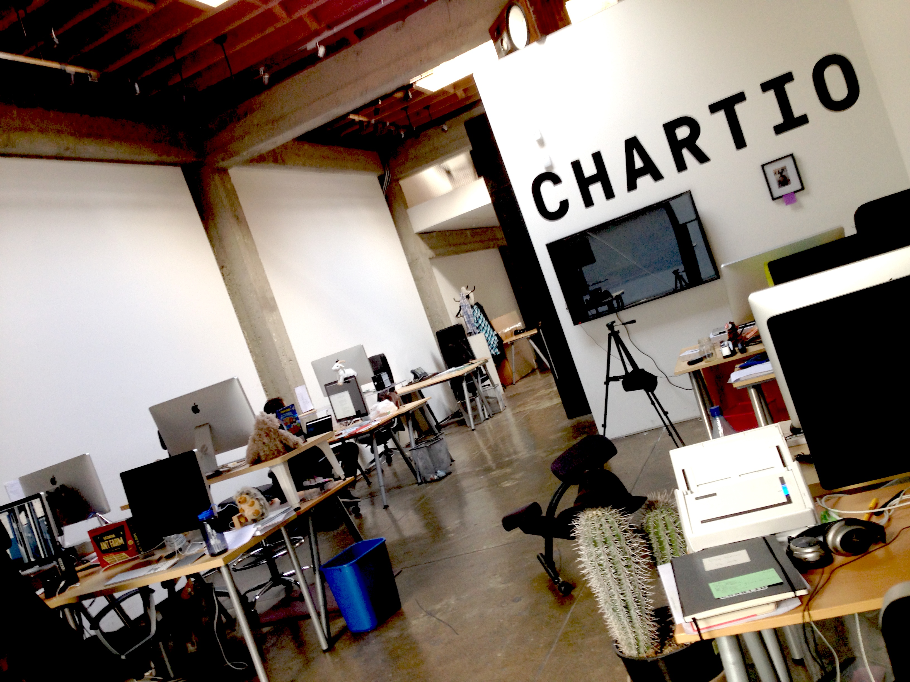
The view from my original desk at Chartio.
One of the first things I did was help to create a home screen for the application.
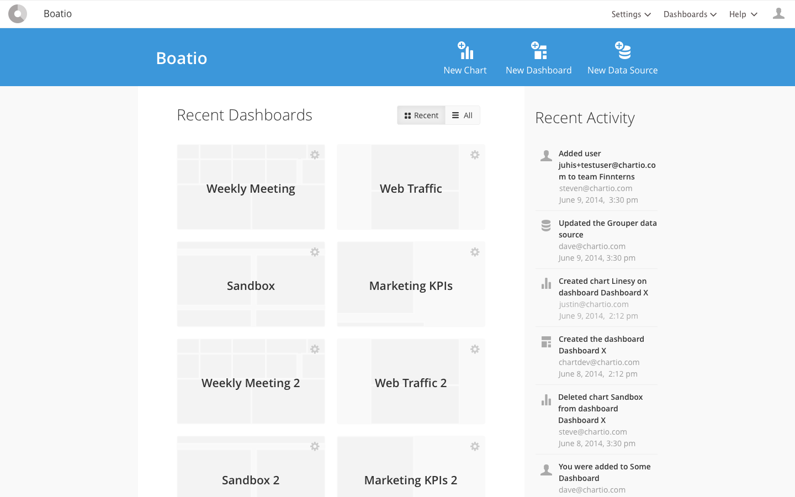
An early mock for a landing page for the application. Before this users would be dropped on their most recently viewed dashboard after logging in, and could only navigate to other dashboards.
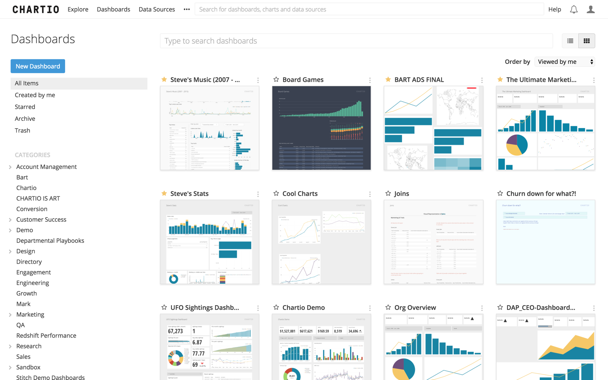
A later, live version of the application home.
Soon enough though, I was in the real thick of it. I helped the team completely redesign the data exploration interface to include what we called the “data pipeline”, which showed sequential transformation steps you could apply to your data table. It also could show you the data table going into and out of each step, so it was clear what each one did.
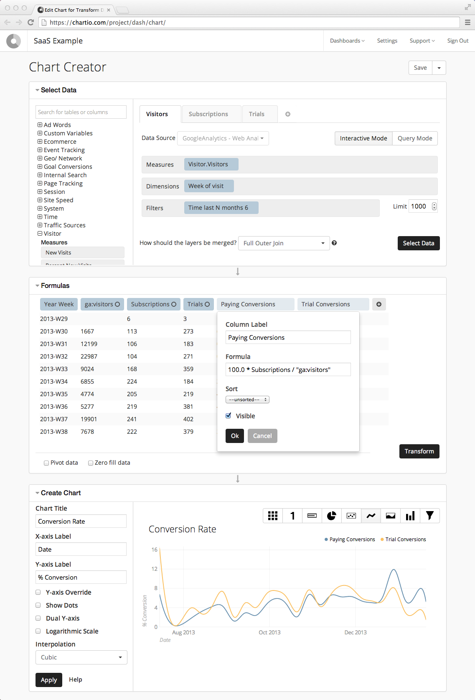
Above is the chart creation interface when I was hired. Rather than a pipeline of steps, users could simply see the data table the chart is being built from in the middle area and do some simple transformations to it.
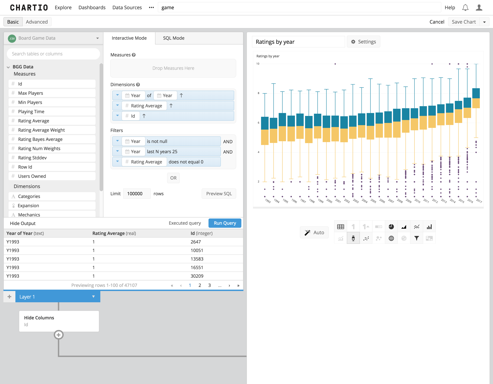
In the new interface, a user can see all the different transformations being applied to the different data layers and understand the data the chart is based on.
The chart creation interface in action.
 A little later after the initial release, we added an intuitive way to do OR filter combinations.
A little later after the initial release, we added an intuitive way to do OR filter combinations.
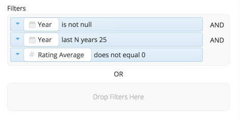
Clicking the "OR" button created a new drop zone.
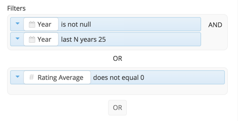
Adding a data field to the new zone made a new button appear.
I helped to replace “arrange mode” on the dashboards with a much more intuitive system for dragging charts at any time, and worked with engineering to align the contents of charts to the same grid the charts themselves sat on.
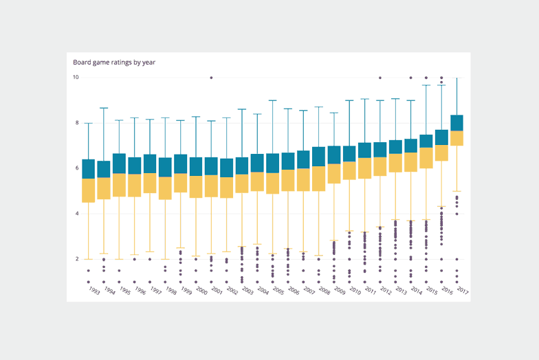
The controls would appear when hovering over any chart, and the larger grid of the dashboard would be revealed when a chart is "grabbed" or resized.
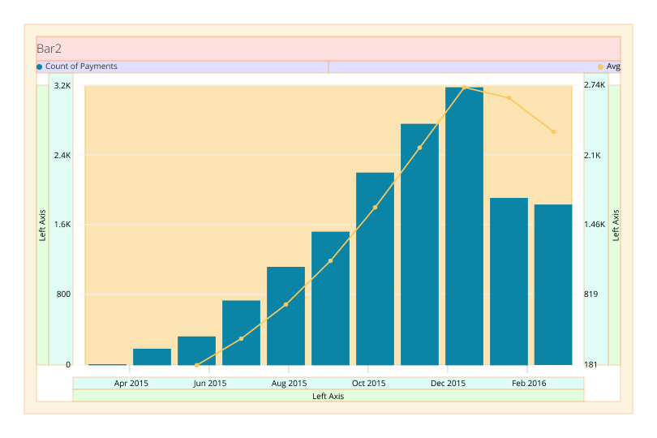
The chart layouts now related to one another and the larger grid of the dashboard.
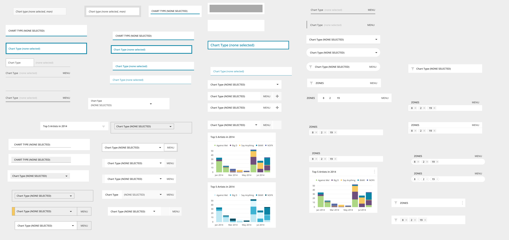
Some of the many potential ideas for styling the dashboard controls, interactive components for changing global variables like a date range for all the charts.
Though I later moved to the Marketing team, I would continue to regularly meet with new product designers and work together on things like new user onboard flows.
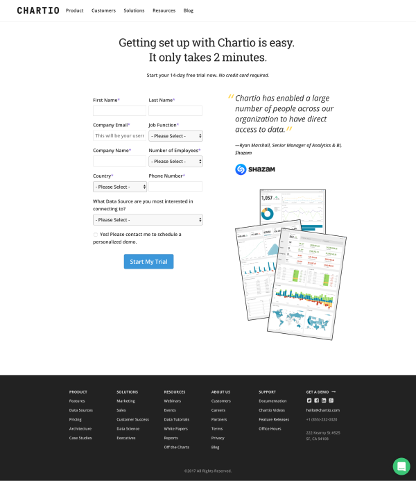
Some split test variations for the main signup page of chartio.com.
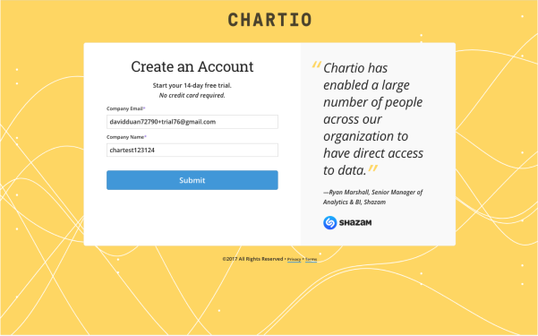
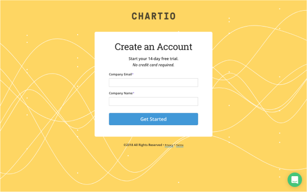
Making the signup page dramatically simple and different from other pages proved very effective.
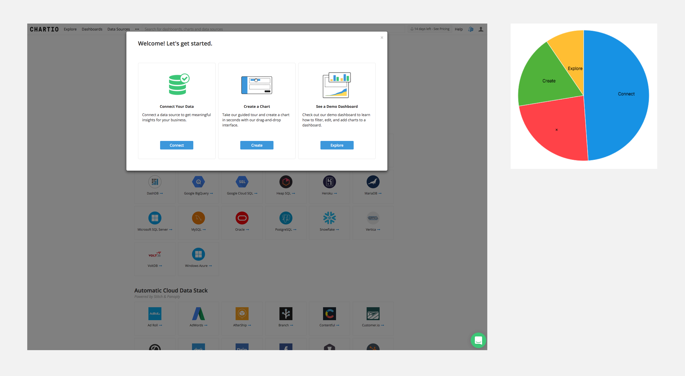
We found that connecting to a data source had a huge impact on a first-time experience, so I suggested simply sending new signups to the connection page immediately. We also tested a modal with different options, pictured here along with a chart of results, which showed users ineed wanted to connect data.
Thanks for taking a look. Reach out anytime. I hope you’re having a nice day :)Copyright © 2013-2019 Steven Lewis